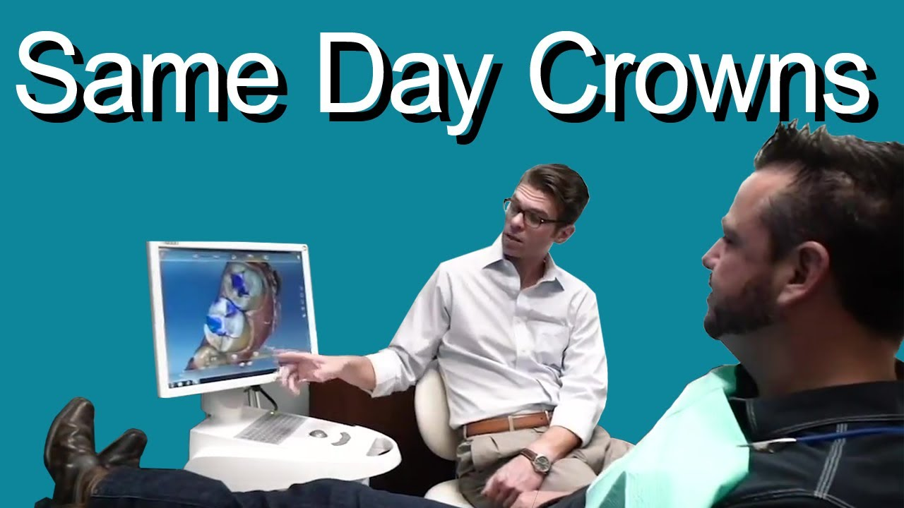

Damage or fracture
A cracked, chipped, or weakened tooth may need coverage and support after its remaining structure is assessed.
Walden Dental · Austin, Texas
Walden Dental provides same-day crowns in Austin for selected cases using in-office CEREC digital design and milling.
A custom crown can cover and support a tooth while restoring its shape and function. Your examination determines whether an in-office crown or another route is appropriate.
Austin office near Cedar Park · Monday to Thursday, 8:00 AM to 5:00 PM · Friday by appointment.

When a crown may be discussed
Your first visit begins with an examination of the tooth, bite, and surrounding health so Dr. Frank can discuss whether a same-day crown or another restoration fits your needs.
Schedule an evaluationA cracked, chipped, or weakened tooth may need coverage and support after its remaining structure is assessed.
When decay or an existing restoration leaves limited tooth structure, a crown may be one option to discuss.
Some treated teeth need added protection. The tooth location, bite, and remaining structure guide the plan.
A crown can sometimes change visible form, but less extensive restorative or cosmetic options may also fit the goal.
How CEREC crown care works
CEREC combines computer-aided design with in-office milling. It supports selected cases; timing still depends on the findings, material, and treatment plan.
Review the tooth, gum health, bite, symptoms, and restorative choices.
When a crown is selected, the tooth is prepared and digital information is collected.
The restoration is designed for the planned tooth shape and bite relationship.
For a suitable case, the design is transferred to the in-office milling unit.
Dr. Frank evaluates the restoration and makes clinical adjustments when needed.
The crown is bonded when appropriate, with care and follow-up guidance for the individual plan.
Walden Dental documents CEREC CAD/CAM, intraoral photography and video, and electric handpieces for applicable care. These tools help the team explain findings and carry out a selected restoration; they do not guarantee eligibility, timing, comfort, fit, or outcome.
See Walden Dental’s technologyCrown care on video

Practice video · 1:28
See the Walden Dental team and clinical technology at work during patient care.

Patient education · 2:22
Hear Dr. Frank explain common reasons for crowns, how CEREC may support selected same-day cases, and one patient’s experience with a front-tooth crown. Your evaluation and current treatment plan determine what is appropriate for you.

Your Austin crown evaluation
Dr. David Frank provides crown evaluations in Austin, where selected CEREC crowns can be designed and milled in the practice.
Dr. Frank evaluates the tooth and bite, discusses appropriate restorative choices, and uses Walden Dental’s in-office CEREC CAD/CAM workflow when it fits the selected crown plan.
His biography documents dental education at Tufts University School of Dental Medicine and undergraduate study at the United States Air Force Academy.
Set realistic expectations
A crown is not selected or evaluated on speed alone. The tooth, material, bite, habits, home care, and follow-up all matter.
Some suitable crowns may be designed, milled, and placed during the same visit. Other findings or restoration needs may require a different sequence or an interim restoration.
The restoration is evaluated clinically. Contact the office if the bite feels uneven, the tooth remains uncomfortable, or anything about the crown changes.
Brush, clean between the teeth, and attend recommended visits. Grinding, clenching, diet, tooth support, and hygiene can influence how a crown performs.
Plan the practical details
Crown cost can vary with the tooth, material, preparation, supporting treatment, and insurance benefits. The office can provide an estimate after the restorative plan is established.
Same-day crown FAQs
These answers provide general orientation. Your examination and written plan determine the recommendation.
See general patient FAQsA same-day crown is a custom restoration that may be digitally designed and milled in the office for a suitable case. An examination determines whether this route fits the tooth and treatment plan.
A crown may be discussed when a tooth is weakened, cracked, heavily restored, worn, treated with a root canal, or needs a change in shape or appearance. The right restoration depends on an examination.
No. CEREC supports selected same-day cases, but timing depends on the tooth, material, clinical findings, and treatment plan.
A suitable same-day case may not require a temporary crown. If the restoration cannot be completed that day, the team will explain the appropriate interim plan.
Crown performance is influenced by the material, bite, tooth support, grinding or clenching, oral hygiene, diet, and professional follow-up. No exact lifespan can be promised.
Contact Walden Dental so the team can evaluate the crown and bite. Avoid trying to adjust or reattach the restoration yourself.
Your Austin dental office
Our Austin office is convenient for patients coming from nearby communities such as Cedar Park, Round Rock, and Brushy Creek. You’ll find us on Floor 1 in Shops at Walden Park.
Wheelchair-accessible entrance. Call the office if you need help planning your arrival.
Ready when you are
Book a same-day crown evaluation online, call (512) 337-8560, or get directions to our Austin office near Cedar Park.